Exporting Session data to Blackboard
TurningPoint includes a feature called Integrations that allows you to import and export information to WCCs Blackboard Server. The Integrations feature allows an Instructor to export Session data directly to the Blackboard Grade Center without having to manually enter scores. After you have run a presentation, TurningPoint allows you to export the data collected and saved to your computer directly to Blackboard. To do so, it is advisable that you use a Participant List that was imported into Turning Point using the Blackboard Wizard.
How to Export Session Data to Blackboard
- From the TurningPoint 2008 tab, click on the Tools drop-down menu and select Integrations.
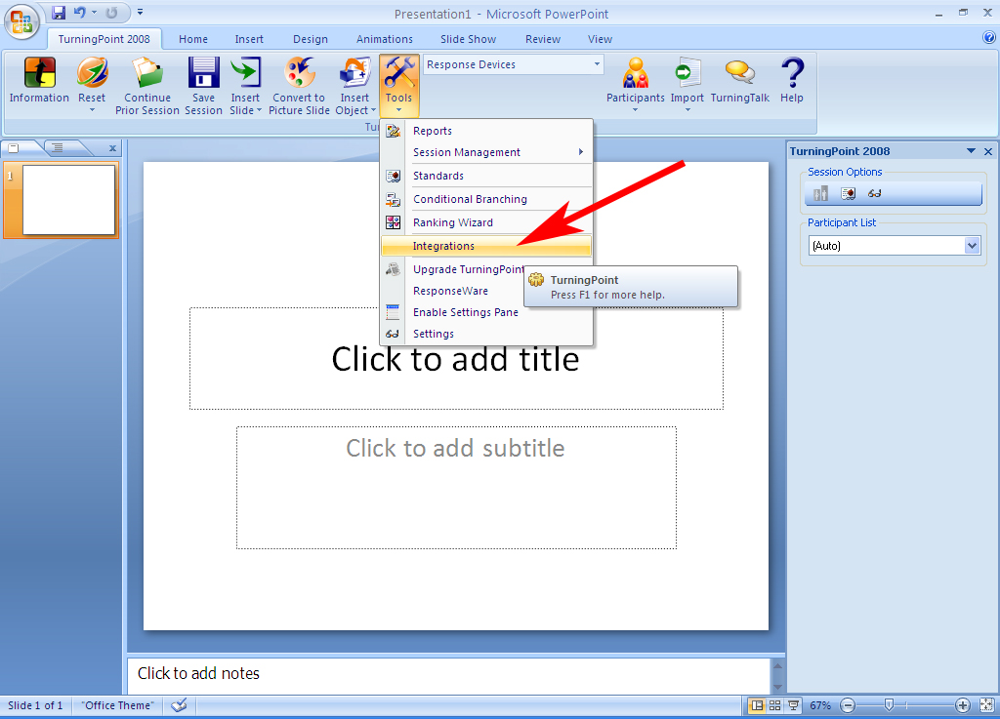
- From the Learning Management System window, locate the Management System drop-down and select Blackboard. In the Server URL enter the Blackboard server location (Blackboard8.wccnet.edu) and click the Next button.
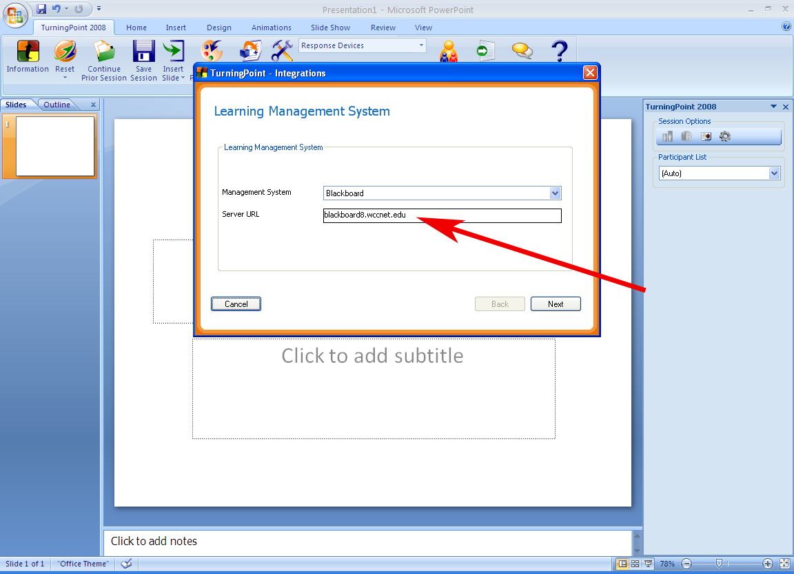
- Enter your Blackboard username and password and click Next. Some users will a experience a pair of pop-up error messages. Disregard these by clicking OK for both. Click Next once more to proceed. You can enter a check mark in the Save this information for future use box if you wish.
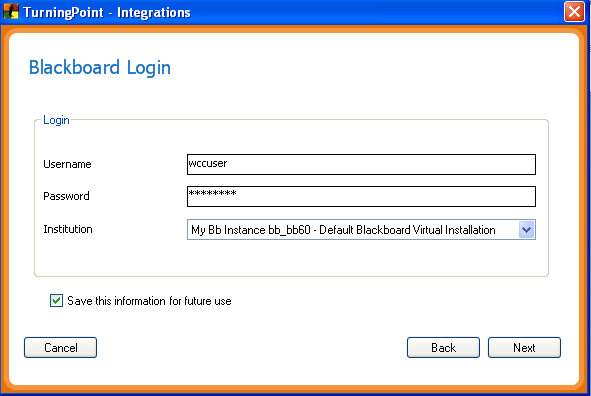
- Blackboard will ask you to log-in once more. Do so and click Next.
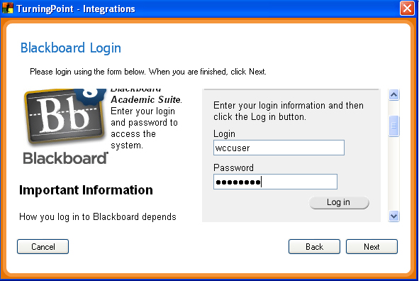
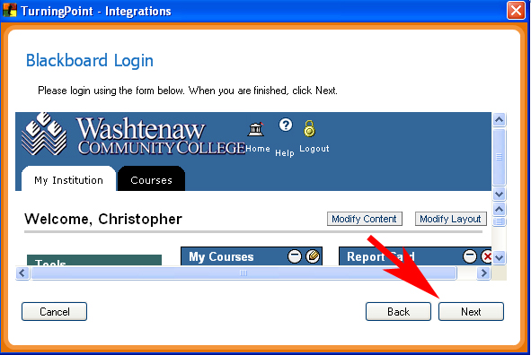
- The Blackboard Wizard window will open. You will have the option of choosing to Import Participant List or Export Grades/Email Student Grades. Select Export Grades/Email Student Grades and click Next.
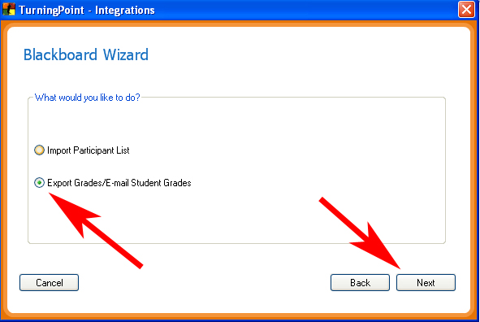
- The Blackboard Select Course window will appear displaying the courses in which you are listed as an Instructor. Select the course that you would like to export grades to and click Finish.
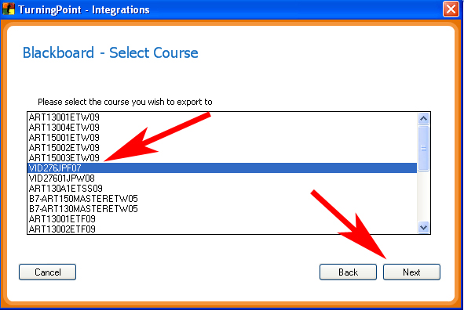
- The Blackboard Export/Preview Options window will appear asking if you want to upload the current Session or upload a Session that has been saved previously. By clicking Other Session, TurningPoint opens your Sessions folder where the Session data is recorded. Navigate to the Session you would like to upload and click Open.
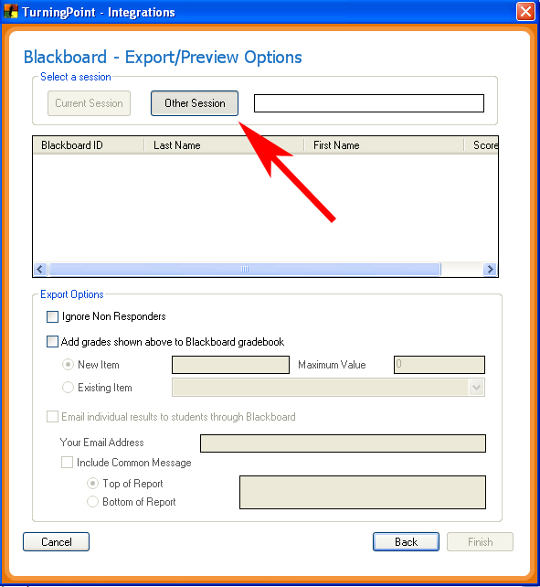
- Notice that the file name has appeared in the text box and the Grade data has also been updated. Add a checkmark to the Add grades shown above to Blackboard Gradebook box. You are now able to name the column header as you would like it to appear in Blackboard as well as assign a maximum point value to the Session.
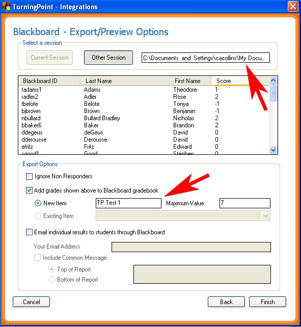
- By adding a checkmark to the Email individual results to students through Blackboard box, you are able to send the grade directly to the students WCC email account. You can also opt to Include Common Message to create a generic message that will be sent in the email. After you have finished entering your data, click Finish. You will see a small message saying Data Exported Successfully.
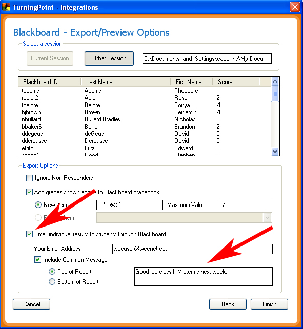
- Log into Blackboard and check the Grade Center for your course. You'll notice that TurningPoint has created a new column in Blackboard and entered the grade data. You may need to format the column to work with your grading scheme.
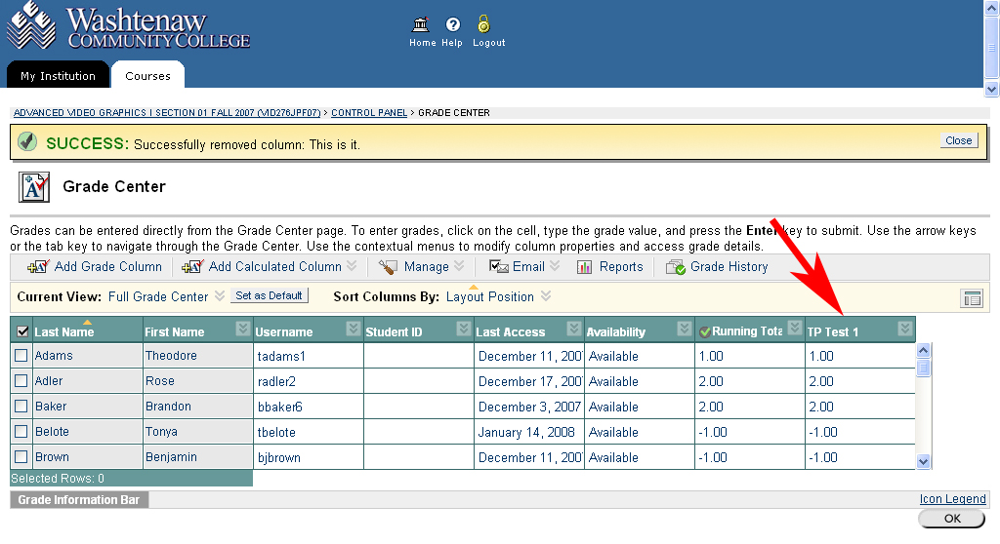